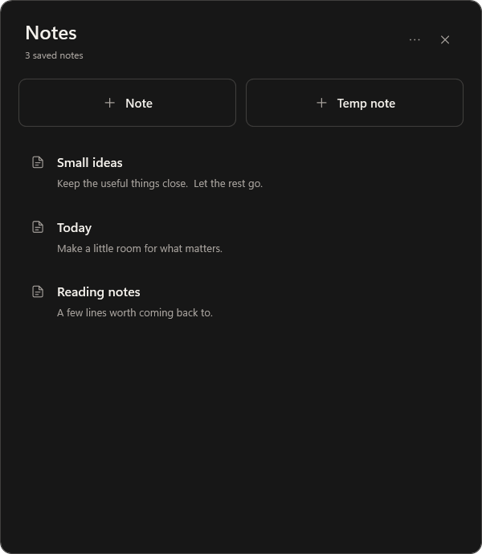
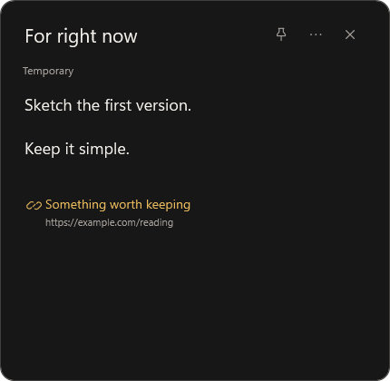

Write. It's saved.
Saved notes write every change to your computer. No save button to remember. No account to create.
LOCAL FIRST. OPEN SOURCE.
For the ideas worth keeping.
And the thoughts just passing through.
A small Windows notes app. Open a thought in its own window, move it beside your work, and keep going. Your saved notes save as you type.
Download for Windows

Saved notes write every change to your computer. No save button to remember. No account to create.
Move, resize, pin, and close notes independently. Arrange them around the thing you're doing.
A scratchpad for the in-between. Temp notes disappear when closed. Save one when it becomes a keeper.
A SMALL, CONSIDERED TOOL
Light or dark. A tidy collection. Links with optional titles. Slim scrollbars and a gentle response to every click.
Your notes live locally as JSON. No cloud sync or analytics. Opening a link uses your browser. Keep a backup of anything important.
Read the guideA 64-bit Windows 10 or Windows 11 PC with .NET Framework WPF and Windows Forms enabled. Downloads include an installer and a portable app. The app is unsigned, so Windows may show an unrecognized publisher notice.
Yes. Notes is open source under the MIT licence. Use it, change it, and share it while preserving the copyright and licence notice. It is provided as-is, without warranty.
A saved note stays in the collection. A temporary note disappears unless you choose Save note first. Closing the collection hides it to the tray; Exit Notes closes the whole app.